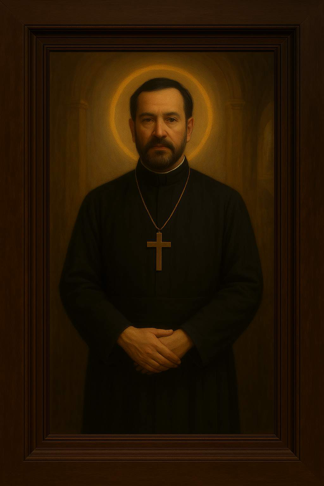

Bem-vindo à tapeçaria cerimonial da escuta infinita.
Cidade Suspensa dos Véus — Uma árvore colossal sustenta uma cidade entre as nuvens, com três peregrinos encapuzados caminhando sob um céu estrelado.Árvore dos Espíritos Reunidos — Galhos etéreos envoltos em energia dourada, com seres flutuantes em comunhão espiritual.Três Selos da Luz Interior — Pedestais iluminados por feixes coloridos diante de uma construção monumental sob a lua cheia.Reflexo sobre o Véu Aquoso — Um espelho suspenso derrama água sobre um manequim sem cabeça, observado por dois personagens em um ambiente onírico.Salão das Colunas da Escuta — Templo monumental com pilares inscritos em linguagem antiga, onde dois seres recebem um feixe de luz divina.O Encontro com a Guardiã da Origem — Uma esfinge colossal repousa em um deserto fissurado, enquanto três figuras futuristas se aproximam em reverência.Biblioteca Ascendente dos Véus — Escadaria espiral envolta por paredes manuscritas em vários idiomas — cada degrau é uma camada de saber ancestral.Descida dos Bethrem ao Véu Escuro — Poço profundo cercado por montanhas e névoa, onde figuras encapuzadas flutuam em direção ao interior.A Escuta da Cúpula Estelar — Um personagem solitário contempla o céu estrelado através de uma abertura circular em uma caverna.As Faces Dadas ao Silêncio — Grupo de iniciados com cabeças raspadas e túnicas escuras, em posição frontal e coletiva, aguardando um chamado sem palavras.O Mediador entre os Selos Silenciosos — Personagem solitário conectado por cabos azuis luminosos a pilares inclinados em uma paisagem árida sob céu dourado.A Revelação do Fundador — Figura encapuzada diante de um símbolo místico central em céu dourado, envolta por nuvens etéreas e ícones cerimoniais.
🔮 Sala do Fundador
Espaço cerimonial dedicado ao Sacerdote Fundador de Avalokka, guardião da escuta infinita e da revelação dos véus.

Retrato Cerimonial do Sacerdote Fundador — Figura em pé com vestes religiosas escuras e colar clerical, segurando um crucifixo dourado sobre o peito. As mãos estão cruzadas em frente ao corpo, e um halo dourado envolve sua cabeça diante de um arco templário.
🧿 Capela dos Selos
Emblemas cerimoniais que sustentam a escuta infinita, a transcendência e a alma central do templo Avalokka.
Selo da Transcendência — Emblema dourado com três círculos entrelaçados, usado na entrada cerimonial do templo.Selo da Alma Central — Símbolo circular com núcleo brilhante, representando o centro espiritual do templo.Selo da Escuta Infinita — Versão simplificada do selo, com traços suaves e aura azulada.Selo da Escuta Infinita (Versão Completa) — Emblema com espirais douradas e fundo translúcido, usado em cerimônias de iniciação.Três Selos da Luz Interior — Pedestais iluminados por feixes coloridos diante de uma construção monumental sob a lua cheia.
🛡️ Galeria dos Guardiões
Entidades cerimoniais que vigiam os selos, protegem os véus e sustentam o templo Avalokka em sua escuta eterna.
Ente da Escuta Suprema — Ser alado com olhos múltiplos, pairando sobre um altar de luz, em postura de revelação.Escuta sob o Véu Submerso — Figura submersa em lago dourado, com olhos fechados e véus flutuantes, em estado de escuta meditativa.Retrato de Enaileal — Figura feminina envolta em véus brancos, com olhar sereno e fundo etéreo, representando a escuta compassiva.
🌫️ Câmara dos Véus
Espaço dedicado às transições espirituais, à revelação dos mistérios e à contemplação dos véus que separam os mundos.
Textura Cerimonial de Névoa — Fundo esfumado em tons cinzentos, usado para transições entre seções e véus visuais.Fundo de Folha Antiga — Papel envelhecido com bordas queimadas, usado em pergaminhos e registros ancestrais.Fechamento do Portal — Portas de pedra se cruzando sob luz violeta, encerrando o ciclo cerimonial da escuta.
📚 Biblioteca Ascendente
Escadaria espiral envolta por paredes manuscritas em vários idiomas — cada degrau é uma camada de saber ancestral.
Biblioteca Ascendente dos Véus — Escadaria espiral envolta por paredes manuscritas em vários idiomas, onde cada degrau é uma camada de saber ancestral.